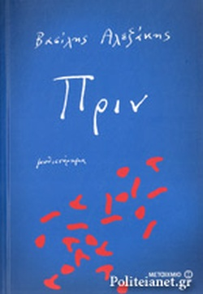
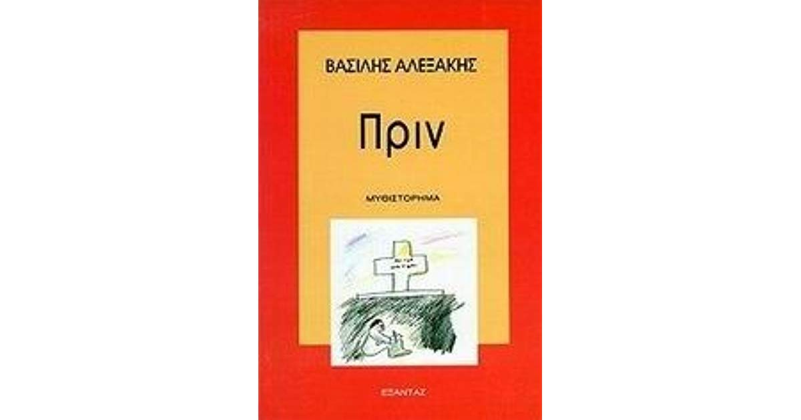

Γιατί τιτλοφόρησα αυτό το κείµενο Πριν; Κανονικά θα έπρεπε να το ονομάσω Μετά. Αλλά συµβαίνουν λίγα πράγµατα εδώ. Πού και πού ακούγεται το µετρό που περνάει: είναι η κυριότερη ψυχαγωγία µας. Το ακούµε πολύ αµυδρά. Σε ποια απόσταση περνάει; Στα εκατόν πενήντα µέτρα; Στα πεντακόσια µέτρα; Πόσος καιρός θα µας χρειαστεί για ν’ ανοίξουµε µια στοά τέτοιου µήκους; Το συζητάµε συχνά αυτό το θέµα. ∆ιακρίνουµε τη µέρα από τη νύχτα χάρη στον ήχο του µετρό. Όταν δεν το ακούµε για µεγάλο διάστηµα, υποθέτουµε ότι είναι νύχτα ή ότι οι οδηγοί κάνουν απεργία. Ακούµε επίσης το άνοιγµα και το κλείσιµο της καγκελόπορτας του νεκροταφείου.
|  |  |
Βρείτε περισσότερες πληροφορίες σχετικά με το βιβλίο: Πριν.